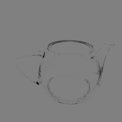
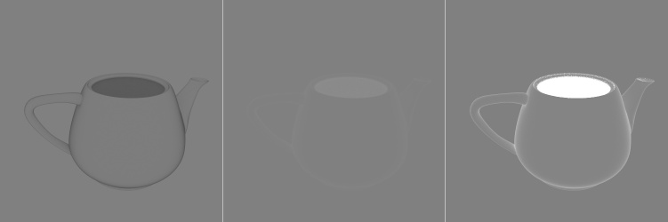
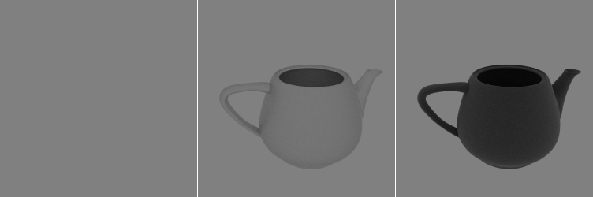

本文没什么内容，只是一时兴起试了一下。
在不考虑fresnel项时，在一个各方向各位置radiance相同的环境光中放置一个物体，该场景能够测试材质是否满足能量守恒的特性，被称为白炉测试（white furnace test）。
如果设环境光对任意方向的radiance为定值，那么一个理想的渲染算法 + 一个能量守恒的材质应该会使得场景中的物体完全隐形，因为看到的物体表面任意一点的颜色都和周围环境完全相同。要证明这个结论也很简单：已知路径追踪算法是无偏的，我们把路径追踪算法使用的路径样本按照路径长度分类，然后从低到高使用强数学归纳法即可。严格的证明我就懒得写了，总之原理是这么一回事。值得注意的是在实践中有些和材质无关的因素可能会导致测试失败，比如路径追踪算法截断了路径的最大长度、使用法线贴图这种没有物理依据的技术等，都会造成一定的能量损失或增益。现在来测试一下Atrc中的一些材质。
首先是理应能量守恒的玻璃：

咦，说好的不可见呢，难道我用了这么久的玻璃材质写得有问题？检查了半天，注意到path tracer的最大深度被设置在了20，会不会是这个值太低了（不过这么大的能量损失实在太夸张了），索性一下改到1000：

灰蒙蒙一片，这就对了，话说如果我按照传统选用球体作为测试模型，是不是就不会遇到这个问题了？
理想漫反射材质（BRDF为常量）肯定是能量守恒的，结果和玻璃一样，就不放图了。
接下来是Roughness分别为0、0.5以及1的disney brdf中的diffuse部分：

可以看到粗糙度越高，反射总能量越多，最右边的茶壶简直像一锅发光的魔法物质。怪不得我总觉得高roughness的disney diffuse物体就跟光源似的（见此实现）。一种可能的解释是这样的设计是为了补偿粗糙度较高时高光lobe没有考虑multiple scattering造成的能量损失，但我觉得这说不通，因为disney brdf给diffuse赋予了一个1 - metallic的权重，导致金属材质并不能获得这个补偿。也就是说，disney brdf中的diffuse更偏向于这种解释，而没有把微表面间的multiple scattering纳入考虑。
接下来看看使用GGX分布的Torrance-Sparrow模型。忽略fresnel项，将粗糙度分别设为0、0.5和1，得到：

这个高光模型会造成明显的能量损失也是意料之中的事情——一来Smith遮蔽函数会稍微过高地估计被遮蔽的微表面比例，二来微表面间的multiple scattering被模型忽略了，而粗糙度较高时这部分能量也会很多。